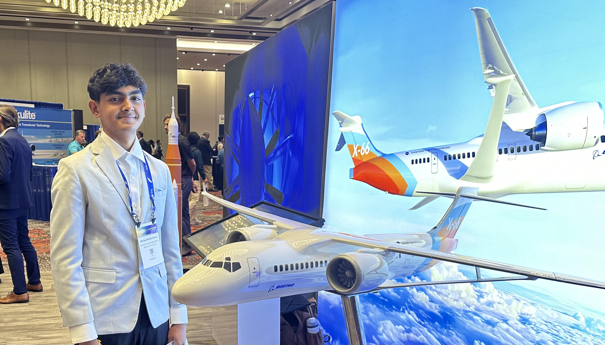

Hey! I'm Nirnay Bhattacharya
A rising high school junior interested in everything above the ground!
I'm currently attending Monroe Township High School in New Jersey, with dreams of becoming an aeronautical engineer or pilot. Simply put, I love airplanes. With all the travel and places I've visited (5 continents!), airplanes have grown on me a lot. Currently, I am a manager at my school's aerospace club, head of software on my VEX Robotics team, and part of the American Institute of Aeronautics and Astronautics' High School Subcommittee!